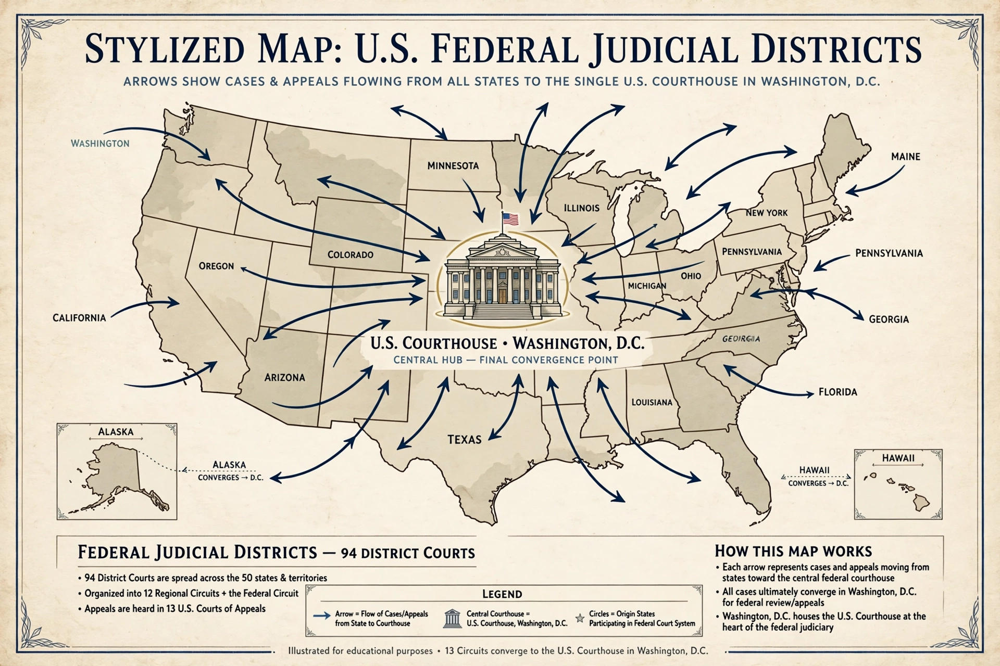

| Statutory basis | 28 U.S.C. § 1407 |
|---|---|
| Enacted | 1968 |
| Deciding body | Judicial Panel on Multidistrict Litigation |
| Scope | Coordinated or consolidated pretrial proceedings only |
| Key limitation | Lexecon Inc. v. Milberg Weiss, 523 U.S. 26 (1998) |
Multidistrict litigation (MDL) is a procedure in the United States federal court system under which civil actions pending in different federal districts that involve one or more common questions of fact are transferred to a single district court for coordinated or consolidated pretrial proceedings. MDL is authorized by 28 U.S.C. § 1407, enacted in 1968, and transfers are ordered by the Judicial Panel on Multidistrict Litigation (JPML), a body of seven federal judges appointed by the Chief Justice of the United States.
Any party to an action, or the Panel on its own initiative, may move for centralization of related cases. The Panel considers whether the actions share common factual questions and whether transfer "will be for the convenience of parties and witnesses and will promote the just and efficient conduct of such actions." If transfer is ordered, the cases are sent to a single transferee court, whose judge manages all pretrial matters: scheduling, discovery, motion practice (including class certification and Daubert challenges to expert testimony), and settlement efforts. Cases filed later that share the same questions — so-called "tag-along" actions — may be transferred conditionally.
Because the transferee judge cannot ordinarily try a transferred case over a party's objection, cases that survive pretrial are remanded to their transferor districts for trial. In practice, the great majority of MDL cases settle or are resolved on dispositive motions before remand. Transferee courts frequently conduct bellwether trials — trials of selected representative cases by consent — to generate information that facilitates global settlement.
In Lexecon Inc. v. Milberg Weiss Bershad Hynes & Lerach, 523 U.S. 26 (1998), the Supreme Court held that a transferee court may not use the general venue-transfer statute, 28 U.S.C. § 1404(a), to assign a transferred case to itself for trial; § 1407 requires remand at the conclusion of pretrial proceedings. Parties may, however, waive their Lexecon rights and consent to trial in the transferee district, which is common in bellwether programs.
Unlike a class action, an MDL does not merge the constituent actions into one: each plaintiff retains an individual case, individual counsel, and the right to refuse a settlement and seek remand for trial. MDL centralization requires no certification and applies only to pretrial proceedings, although in mass tort practice the transferee court's settlement infrastructure often makes the distinction less visible in practice.
Commentators have criticized the degree to which MDL practice — including common-benefit fee assessments, bellwether selection, and pressure toward aggregate settlement — has developed through judicial practice rather than the Federal Rules. Proposals to formalize MDL procedure in the Federal Rules of Civil Procedure have been studied by the Judicial Conference's advisory committees, and an MDL subcommittee has considered rule amendments addressing, among other things, early vetting of claims and interlocutory appellate review.